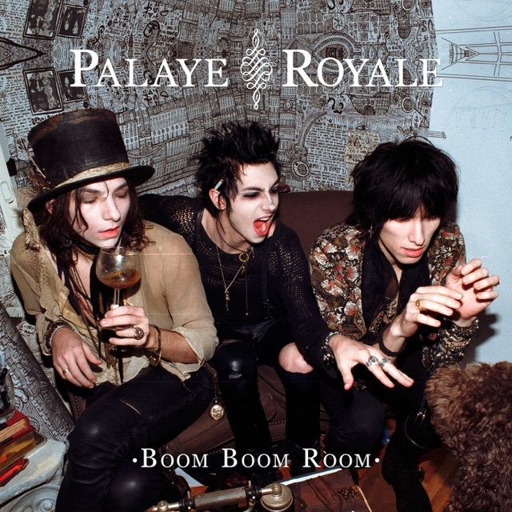

Días grises☁️
Publicación: |Genero: Glam Rock
Días grises son muchos, y hoy fue uno de los tantos más por venir por lo que re visité a uno de mis grupos musicales favoritos desde hace algunos años.
Este grupo me acompaño durante el final de mi adolescencia y ahora adultez mediante sus letras un tanto tristes y melodías fuerte y experimentalesヾ(＠⌒ー⌒＠)ノ
Hoy traigo Where Is The Boom? de la banda Palaye Royale
¿Qué es el Glam Rock✨?1
El glam rock es un subgénero del rock que se desarrolló durante la primera mitad de la década de 1970 principalmente en el Reino Unido. Glam es un apócope de la palabra glamour, por lo que el glam rock se puede traducir como «rock glamuroso». El género se caracterizaba por su teatralidad en su puesta en escena y por una estética camp y extravagante que jugaba con la androginia y la ambigüedad sexual. Musicalmente fue un género heterogéneo en el que cada artista aportó su propia identidad, aunque eran comunes las canciones con riffs de guitarra sencillos y melodías pegadizas.
¿Por qué 'Where Is The Boom?'?
Where Is The Boom? es una de las canciones que, en su momento, identificaba mi situación actual, por lo que es astante importante para mí. Hoy si bien no me identifico tanto, puesto que estoy en un estado mental mucho más saludable, sigo escuchándola cada tanto pues (ignorando la letra) los elementos musicales en sí me encantan, el uso del bajo, la voz de Remington y demás son cosas que simplemente
Un fragmento que me hizo ascender...🌌
"And I want to go, want to live my own life
Want to find all the things I've lost inside
Every time that I try
Then I see you smiling, I see you smiling"
Más que nada, es la melodia de este puente la que me lleva a un plano astral distinto...( ﹁ ﹁ ) ~→
